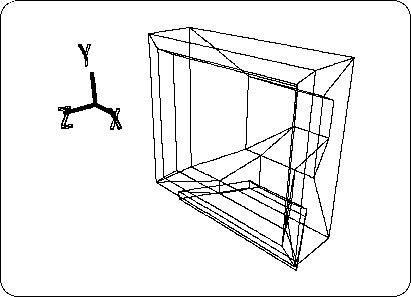
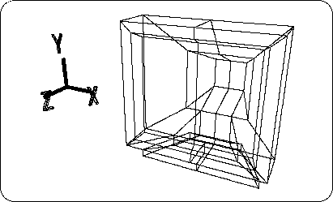
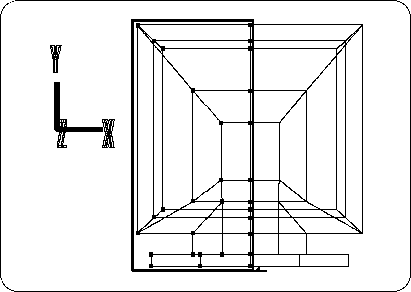
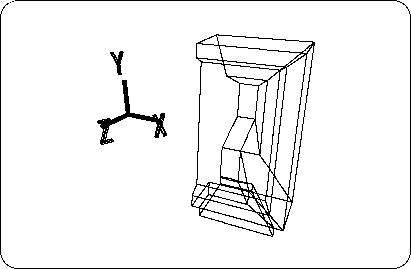
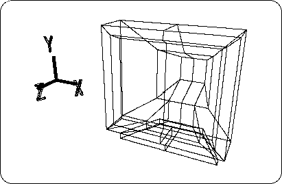
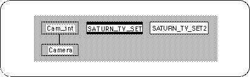
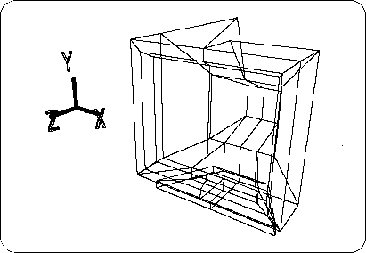
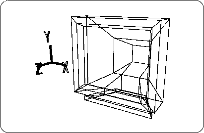

Return to previous page | Return to menu ｜ Go to next page
This chapter introduces useful techniques for using SOFTIMAGE.
Notes on description
In the text, [] indicates a menu command, and [] indicates a hierarchical (sub) menu.
Here are some techniques to help you make a symmetrical model.
I think that there are many opportunities to make a model of symmetry (Symmetry), but make only half of the reference plane (XY, YZ, ZX plane), [Effect] → [Symmetry] .
Handling half is simply reducing the number of points (vertex), reducing mistakes, speeding up work, and making it easier to see when viewing the wireframe.
I made the TV monitor and the car that I made when I practiced modeling without halving them, but the method of modeling in the future depends on personal preference.
Set the mode to “Model” and load the TV monitor model (SATURN_TV_SET) created in Chapter 2.
[Get] → [Element] → [MODELS]
Immediately after loading, it looks like the following figure (Figure 5-1).

After loading, press Spacebar + Left Mouse Button to select the object.
[Effect] → [Subdivision]
please choose. When the “Mesh Subdivision” window appears,
X: 1, Y: 0, Z: 0
And click “OK”.
Then, as shown in the figure below, the line is drawn at the X = 0 part (Figure 5-2).

At this point, switch from OBJ mode to TAG mode and add TAG to the points shown below (Figure 5-3) (enclosed with "T" key + left mouse button ).

After confirming again that it is in TAG mode,
[Delete] → [Selection]
Please do. The left half of the TV monitor (X <0) should have disappeared.
Remove all remaining TAGs here. (Enclose with "T" key + middle mouse button )

From now on, I will explain how to make the whole object from the state that half of the object is completed.
First, set the mode to OBJ mode.
Make sure that the TV monitor (half) model is selected and
[Effect] → [Symmetry]
please choose.
Since it is sufficient to create an object symmetrically on the YZ plane, select “YZ plane” and click “OK”, as shown below (Figure 5-5).

The Schematic screen should look like the figure below. (See Chapter 3 for the Schematic screen)

In this state, the shape of the TV monitor is completed in terms of display, but it actually consists of two objects. When there are two objects, it is very difficult to handle programmatically, so we will work to combine these two into one.
Change the select mode from “Single” to “Multi” (there is a box on the right side of the screen).
Next, select “SATURN_TV_SET” ( Space key + left mouse button click or enclose).
You should now have two models selected. Where
[Effect] → [Merge]
please choose. A window called "Merge" will appear.
Click “OK” without checking the two checkboxes. The wireframe will flash for a moment, but it doesn't seem to change. But look at the Schematic screen here. A new model called "bmerge" has been created.
The function called Merge is a function that creates a new object from multiple objects.
Now, to see the newly created "bmerge", put the other two objects in the Hide state.
As you did in Chapter 3, select the object you want to hide one by one, and
[Display] → [Hide] → [Toggle Selection]
Can be hidden.
However, if you look at the Schematic screen now, “bmerge” is selected, so
[Display] → [Hide] → [Unselected]
Please run the. Then everything except “bmerge” is hidden.
Now, let's take a look at the “bmerge” model.
It looks like it is made properly, but look at the figure below (Figure 5-7).

Pick and drag the point on the line dividing the TV monitor into two with the "M" key + any mouse button . In fact, the dots overlap at the same position.
After moving the point by dragging, use UNDO to restore it ( "U" key + left mouse button ).
Next, we will work to combine these overlapping points into one.
[Effect] → [Cleanup]
please choose. When the “Mesh Cleanup” window appears,
Check the check boxes in front of “Merge near points if distance less than” and “Merge unconnected vertices” (first and third from the top).
Confirm that the value of the “Merge near points if distance less than” condition is “0.001” and click “OK”.
Now, as you did in step 5, try moving the point on the line dividing the TV monitor into two with the "M" key + any mouse button .
I think two points are already one.
If there is a point at the same position, it will be difficult to model. If there are multiple points at the same position, use "Cleanup" to group them together as described above.
Now, here's the center dividing line,
[Mesh] → [Edge]
Execute with right mouse button (Remove edge). Then, erase the excess points using one of the following methods.

The TV monitor is now complete.
In this way, when modeling, remember that you can create only one half of the reference plane and then the other.